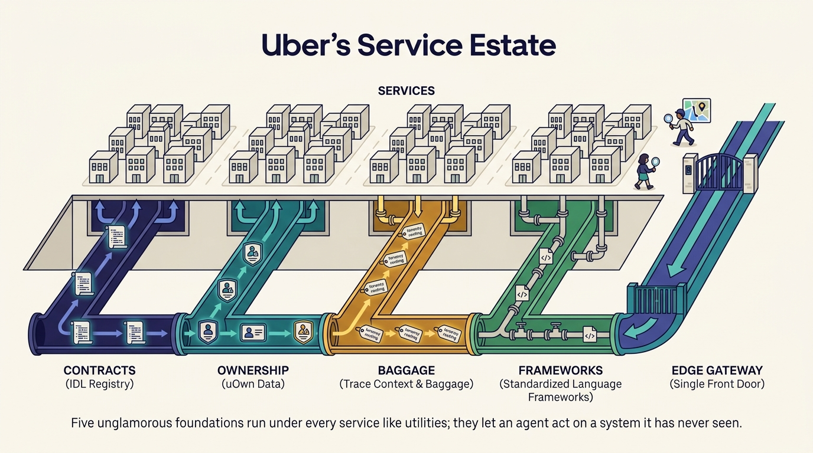

Part I — FOUNDATIONS: The Decade Before AI
The Hidden Foundations: Typed Contracts, Ownership Metadata and Trace Baggage

Image generated by Google Gemini (gemini-3-pro-image-preview)
Part I — FOUNDATIONS: The Decade Before AI

Image generated by Google Gemini (gemini-3-pro-image-preview)